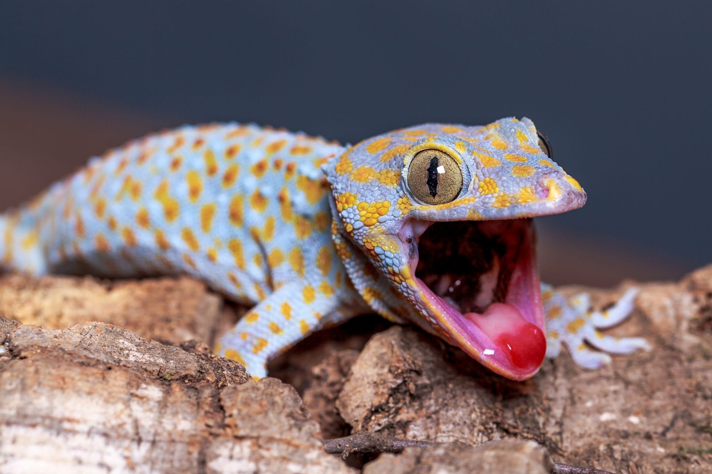
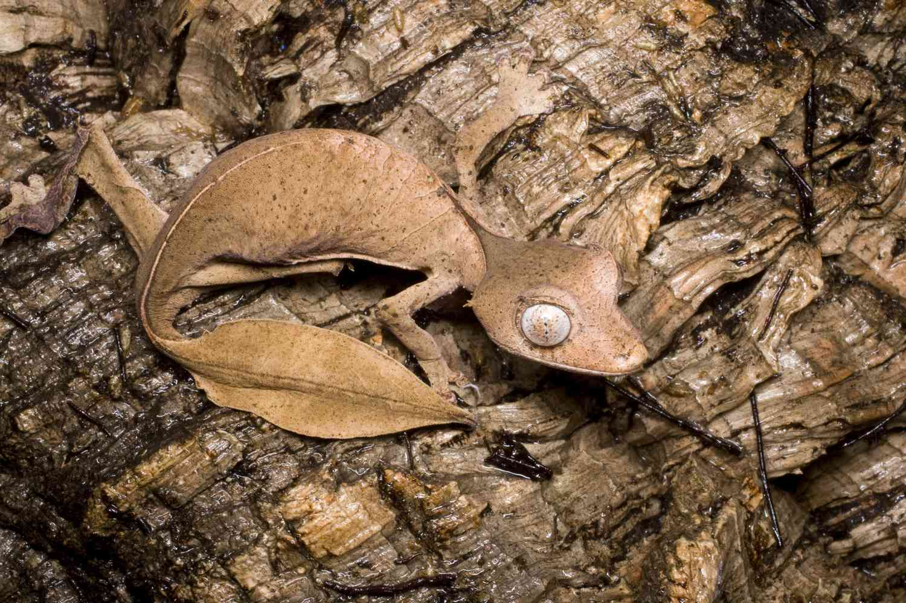

Gecko Appreciation
Welcome To The Wonderful World Of Geckos!
Geckos are small to medium-sized lizards found in warm climates throughout the world. They are known for their unique ability to climb smooth and vertical surfaces, and even move across ceilings with ease. This is due to the millions of tiny hair-like structures called setae on their toes. Geckos are also vocal lizards and communicate with chirping sounds. Their distinct calls vary between species and situations, often used to establish territory or attract mates. These calls can range from chirps, clicks, and sometimes even barks! I hope you gain an appreciation for these goofy little reptiles like I have.
Geckos in the Wild
Many gecko species are nocturnal and prefer to hunt at night. They have excellent vision adapted for low light, and their eyes lack eyelids, so they clean them with their tongues. Geckos feed on a variety of insects and are beneficial to humans by controlling pest populations. Some geckos can drop their tails as a defense mechanism to escape predators. The tail will eventually grow back, although it often differs in color and shape from the original. Geckos ability to regrow their tail is also an important topic in scientific communities.
Fun Facts!
- Over 1,500 species of geckos exist worldwide.
- They can cling to glass, walls, and ceilings.
- Some geckos can change color for camouflage or communication.
- Many geckos can live for 10-20 years in captivity.
Conclusion
Geckos are more than just fascinating reptiles—they're a testament to the wonders of evolution and adaptation. From their gravity-defying feet to their unique vocalizations and survival strategies, geckos have carved out a special niche in the animal kingdom. Whether you're observing them in the wild, keeping one as a pet, or simply learning about their behavior, there's no denying their charm and ecological importance. By appreciating and protecting geckos, we support biodiversity and the delicate balance of nature.
Learn more about geckos at National Geographic and Zillarules.